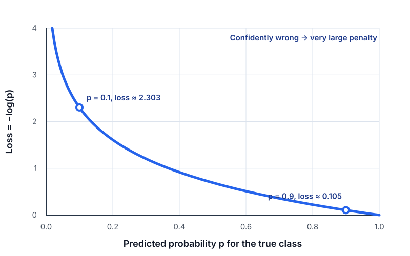

Binary Cross-Entropy Loss
Binary cross-entropy measures how well a predicted probability matches a binary label.
Let \(p\) be the model's predicted probability that \(y = 1\). For one example, the loss is
Because \(y\) is either 0 or 1, only one term contributes:
| True label | Loss | What minimizes it? |
|---|---|---|
| \(y = 1\) | \(-\log p\) | Making \(p\) close to 1 |
| \(y = 0\) | \(-\log(1-p)\) | Making \(p\) close to 0 |
Understanding \(-\log p\)
When the true label is 1, \(p\) is the probability assigned to the correct class. The negative logarithm gives a small penalty to confident correct predictions and a large penalty to confident wrong predictions.

- The loss is 0 when \(p = 1\).
- The loss grows as the model assigns less probability to the correct class.
- The loss approaches infinity as \(p\) approaches 0, heavily penalizing confident mistakes.
For example, when the true label is 1, predicting \(p = 0.9\) gives a loss of about \(0.105\), while predicting \(p = 0.1\) gives a loss of about \(2.303\).
When the true label is 0, binary cross-entropy uses \(-\log(1-p)\), which follows the same idea with the curve reflected horizontally.
From one example to a dataset
For input \(x_i\), let \(p_\theta(x_i) = P_\theta(Y=1 \mid X=x_i)\) be the probability predicted by a model with parameters \(\theta\). Training usually minimizes the mean binary cross-entropy across a batch of \(N\) examples:
A lower binary cross-entropy means the predicted probabilities align more closely with the true labels. In practice, deep-learning libraries often compute this loss directly from logits for better numerical stability.